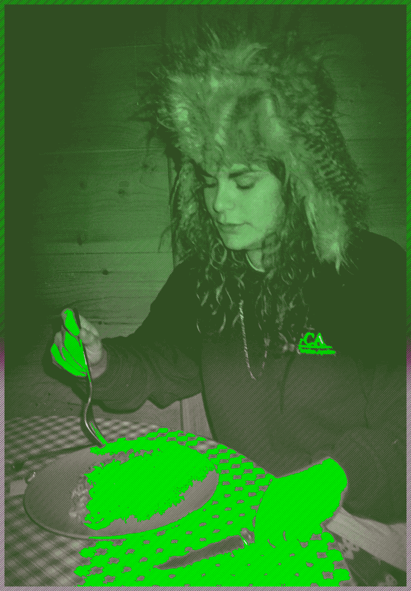

Charlène Levasseur
Audio Visual Artist
sojbdor@gmail.com
HTML5, CSS, Java, Json, Unity, C4D, Unity, Ai, Id, Pr, Br, Ps, Ae, Fl, Traktor, Ableton Live
Charlène Levasseur is an artist and animator residing in Berlin. Born and raised in the South West of France. She graduated from the institute superior of Art of Toulouse in 2018, where she studied the painting and media program. While in isdaT, she discovered animation through the Adobe After Effects and Avid Media Composer. She quickly became addict to the art of moving images. She quickly has been involved in the creation of animated work since 2015. Her enthusiasm led her to the creation of a label of art and music devoted to the screening of short animated independent videos and sounds, with 9 artists from around the France.
In 2019, Charlène Levasseur relocated to Berlin to take part in the art scene of Germany. As an artist who is excited about sound and visuals alike her recent films are created in a pursuit of a synesthetic relationship between image and sound. Her last abstract film is
Don’t Walk Alone in collaboration with a sound artist Pablo Mateo from the Label Figure. Aside from Charlene’s personal work she has collaborated with other artists or organisations such as, CampusFM94, Les Siestes Electroniques, Acolora, Roven, FIFIB, La Nuit du Cinéma, Olympe de Gouges, La Forêt Electrique, isdaT, Ensad, Michel Montaigne Bordeaux III, Augustin Museum, Jose Cabanis Media Library, la Cartoucherie, le Printemps de Septembre, l’Annexe, le DadA, le Synopsis, Kit: Exhibition Space, Aparte, Le Cri de la Mouette and Forbiden Zone.